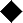
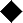
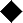
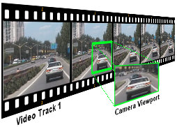

menu de aproximação e uma  luz em forma de losango.
menu de aproximação e uma  luz em forma de losango.
| [ << ] | [ >> ] | [Top] | [Contents] | [Índice] | [ ? ] |
Esta janela exibe a saída da linha do tempo. É a interface para a maioria das operações de composição e operações que afetem a aperência da saída da linha do tempo. Operações realizadas no Compositor afetam a linha do tempo mas não afetam os recortes.
A saída do vídeo possui várias funções de navegação. O tamanho de saída do vídeo está ou ligado ao tamanho da janela ou desligado, com barras de rolagem para navegação. A saída do vídeo pode ser aproximada ou afastada e/ou vista de uma forma panorâmica. Navegar pela saída de vídeo desta forma não afeta a saída renderizada; isso apenas muda o ponto de vista na janela de composição.
Caso o vídeo esteja desligado do tamanho da janela, clicar com o botão do meio do mouse e arrastar para qualquer lugar no vídeo faz uma panorâmica pelo ponto de vista.
Pressionar as teclas + e - aproxima e afasta a saída de vídeo.
Abaixo da saída de vídeo há cópias de várias das funções disponíveis na janela principal. Além delas, há um menu de aproximação e uma  luz em forma de losango.
O menu de aproximação pula para todas as configurações possíveis de aproximação e, por meio da opção Auto, trava o ajuste de visualização do vídeo ao tamanho da janela. O menu de aproximação não afeta do tamanho da janela.
A luz em forma de losango fica vermelha quando estiver acontecendo uma renderização. Isso é útil para saber se a saída é atual.
Clicar com o botão direito do mouse em qualquer lugar da saída de vídeo traz um meni com todos os níveis de aproximação e algumas outras opções. Neste caso em particular, os níveis de aproximação redimensionam toda a janela e não apenas o vídeo.
As opções Zerar câmera e Zerar projetor centralizam a câmera e o projetor See section Composição.
A opção Esconder controles esconde tudo exceto o vídeo.
À esquerda da saída de vídeo há uma barra de ferramentas específica da janela de composição. Aqui estão as funções da janela de ferramentas:
Desabilita as mudanças para a saída do compositor a partir de cliques feitos nela. É uma camada extra acima da armação/desarme de trilhas para prevenir mudanças não desejadas.
Esta ferramenta  aproxima e afasta a saída do compositor sem redimensionar a janela. Se a saída do vídeo for atualmente ligada ao tamanho da janela, clicar no vídeo com a lente de aumento desliga-o e cria barras de rolagem para navegação.
aproxima e afasta a saída do compositor sem redimensionar a janela. Se a saída do vídeo for atualmente ligada ao tamanho da janela, clicar no vídeo com a lente de aumento desliga-o e cria barras de rolagem para navegação.
Clicar com o botão esquerdo do mouse no vídeo aproxima.
Clicar com a tecla ctrl no vídeo aproxima.
Rodar a rodinha do mouse aproxima ou afasta.
Esta ferramenta  traz a ferramenta de edição de máscaras See section Máscaras. Habilite a
traz a ferramenta de edição de máscaras See section Máscaras. Habilite a  janela de ferramentas para ver as opções para esta ferramenta.
janela de ferramentas para ver as opções para esta ferramenta.
Esta ferramenta  traz a ferramenta de edição de câmera See section A câmera e o projetor. Habilite a janela de ferramentas para ver as opções para esta ferramenta.
traz a ferramenta de edição de câmera See section A câmera e o projetor. Habilite a janela de ferramentas para ver as opções para esta ferramenta.
Esta ferramenta  traz a ferramenta de edição do projetor See section A câmera e o projetor. Habilite a janela de ferramentas para ver as opções para esta ferramenta.
traz a ferramenta de edição do projetor See section A câmera e o projetor. Habilite a janela de ferramentas para ver as opções para esta ferramenta.
Esta ferramenta  traz a ferramenta de recorte See section Recorte. A janela de ferramentas deve estar habilitada para que esta ferramenta possa ser usada.
traz a ferramenta de recorte See section Recorte. A janela de ferramentas deve estar habilitada para que esta ferramenta possa ser usada.
Traz o conta-gotas. O conta-gotas detecta qualquer cor que estiver abaixo dele e a armazena em uma área temporária. Habilitar a ferramenta de informação exibe a cor selecionada atualmente. Clique em qualquer lugar da saida de vídeo para selecionar a cor daquele ponto.
O conta-gotas não apenas permite que você veja áreas recortadas como seu seu valor pode ser aplicado a vários efeitos. Diferentes efeitos lidam com o conta-gotas de diferentes maneiras.
Este botão de ferramenta trabalha apenas em conjunto com outros controles no compositor. Baseado em qual controle do compositor estiver ativo, o botão ativará/desativará a caixa de diálogo de controle apropriada.
Controles com caixas de diálogos são:
Esta ferramenta  desenha as áreas de segurança na saída do vídeo. Isso não afeta a saída renderizada See section Margens de segurança.
desenha as áreas de segurança na saída do vídeo. Isso não afeta a saída renderizada See section Margens de segurança.
Grande quantidade do tamanho binário do Cinelerra é dirigido para a composição. Quando você remove as legendas ("letterbox") de um programa em widescreen, você está compondo. Mudar a resolução de um programa, fazer uma divisão de telas, fades de entrada ou saída, entre outras coisas, todas são operações de composição no Cinelerra. O Cinelerra detecta quando está em uma operação de composição e somente aí faz a reprodução pelo engine de composição. De outra forma, ele usa o decodificador mais rápido disponível no hardware.
Operações de composição são feitas na linha do tempo e na Janela de Composição. Há atalhos na Janela de Recursos para mudar alguns dos atributos de composição. Uma vez que alguns arquivos de vídeo estejam na linha do tempo, a janela de composição é um bom lugar para tentar fazer a composição.
Na janela de composição, as funções mais importantes são o botão de câmera e o botão de projetor. Eles controlam a operação da câmera e do projetor. Dentro da linha de composição do Cinelerra, a câmera determina de onde no vídeo fonte o temporário será copiado. O projetor determina para onde na saída o temporário será copiado. O temporário é um quando de vídeo na memória do Cinelerra onde todo o processamento gráfico é realizado.

O processo é bem como se escaneássemos um rolo de filme a um quadro por vez e alterássemos, por exemplo usando o Gimp, digitalmente a imagem escaneada com vários filtros. Uma vez que a imagem tenha sido transformada pelos filtros - de correção de cor, por exemplo -, nós então projetamos a imagem acabada de novo em um novo rolo de filme, criando assim uma nova versão "modificada" do original.
Cada trilha possui um temporário diferente que é definido pelo tamanho da trilha. Ao redimensionar as trilhas, você pode criar telas divididas, panorâmicas e aproximações.

Representação visual da cadeia de composição
Quando se edita a câmera e o projetor na janela de composição, a primeira trilha com o gravar habilitado é a trilha afetada. Mesmo se a trilha estiver completamente transparente, ela ainda será a afetada. Caso várias trilhas de vídeo existam, o jeito mais fácil de selecionar uma delas para ser editada é pressionar clicar + usar o botão SHIFT no ícone de gravação daquela trilha. Isso a isolará.

O propósito do projetor é colocar os conteúdos do temporário na saída do projeto. A intenção do projetor é compor várias fontes de várias trilhas em uma trilha final de saída.
O quadro de alinhamento do projetor é idêntico à visualização ("viewport") da câmera, exceto que ele guia para onde na tela ("canvas") de saída serão colocados os conteúdos de cada temporário.

Quando o botão do projetor está habilitado na janela de composição, você está no modo de edição do projetor. Uma caixa de guia aparece na janela do vídeo. Arrastar em qualquer lugar da janela de vídeo faz com que a caixa de guia se mova, se tudo der certo junto com o vídeo. arratar-com-o-SHIFT em qualquer lugar da janela de vídeo faz com que a caixa de guia encolha ou cresça junto com o vídeo. Uma vez que você tenha posicionado o vídeo com o projetor, você está pronta/o para dominar a câmera.
Selecione o botão de câmera para habilitar o modo de edição de câmera. Neste modo, a caixa de guia mostrará onde a posição da câmera está em relação às posições passadas e futuras de câmera, mas não onde ela está com relação ao vídeo de origem. Arrastar a caixa da câmera na janela de composição não move a caixa, mas a localização do vídeo dentro dela.
O viewport é uma janela na câmera que enquadra a área do vídeo-fonte a ser escaneada. O viewport é representado como um quadro vermelho com barras diagonais em cruz.

O viewport

Tamanhos de Viewport
O tamanho do viewport é definido pelo tamanho da trilha atual. Um viewport menor (640x400) captura uma área menor. Um viewport mais largo (800x200) captura uma área mais larga que o vídeo de origem e preenche os espaços vazios com brancos.
Uma vez que temos nosso viewport definido, ainda precisamos colocar a câmera abrangendo a área do vídeo de origem na qual estamos interessados. Para controlar o local da câmera:
Quando fazemos o arraste por sobre o viewport na janela de composição (embora inicialmente anti-intuitivo), não é o viewport que se move, mas a área de vídeo que está abaixo da locação da câmera, como quando monitoramos uma câmera em movimento em um monitor.

Na janela de composição, o viewport sempre será exibido
de forma centralizada, o que se move é o vídeo abaixo dele
Por exemplo, quando você arrasta a câmera para baixo, o viewport de fato estará se movendo para baixo no vídeo, mostrando seu caminho em direção à base do vídeo, mas de nossa perspectiva na tela de composição, vemos o vídeo se movendo para cima. Quando você arrasta a câmera para a direita, o vídeo parece se mover para a esquerda e assim por diante.
Nota: A caixa guia mostra onde a posição da câmera está com relação às posições passadas e futuras da câmera, não onde ela está com relação ao vídeo de origem.
Na janela de composição, há um menu de opções para a câmera e o projetor. Clique com o botão direito por sobre a porção do vídeo na janela de composição para revelar o menu.
A câmera e o projetor não têm operações de atalho nem no menu nem representado nas sobreposições de vídeo. Eles estão acessíveis na Janela de ferramentas. A maioria das operações na janela do Compositor têm uma janela de ferramentas que pode ser habilitada ativando o botão de interrogação.

A janela de ferramentas de câmera e projetor
No caso da câmera e do projetor, a janela de ferramentas mostra as coordenadas x, y e z. Ao se mudar estes valores, a câmera e o projetor podem ser posicionados precisamente. 9 tipos de justificação também estão definidos para acesso fácil. Uma operação popular de justificação é a projeção na parte superior esquerda após a redução da imagem. Isso é usado quando se reduz o tamanho do vídeo com ajuste de razão de aspecto.
 Esquerda
Esquerda
 Horizontal Centro
Horizontal Centro
 Direita
Direita
 Topo
Topo
 Vertical Centro
Vertical Centro
O efeito de translação permite a conversão e redução simultânea de razão de aspecto, mas é mais fácil de ser usado se o vídeo reduzido for colocado na parte superior esquerda do temporário ao invés de ao centro. O tamanho da trilha é ajustado para o tamanho original do vídeo e a câmera é centralizada. O tamanho de saída é ajustado para o tamanho reduzido do vídeo. Sem efeitos, isso produz justamente o recorte da porção central do vídeo na saída.
O efeito de translação é jogado na trilha de vídeo. As dimensões de entrada do efeito de translação são ajustadas para o tamanho original e as dimensões são ajustadas para o tamanho reduzido. Para colocar o vídeo reduzido na subseção central que o projetor mostra requereria deslocar o x de saída e o y de saída por um cálculo complicado. Ao invés disso, deixamos o x de saída e o y de saída em 0 e usamos a janela de ferramentas do projetor.
Simplesmente ao selecionar  justificar à esquerda e
justificar à esquerda e  justificar ao topo, o projetor exibe a imagem reduzida na parte de cima e à equerda do temporário no centro da saída.
justificar ao topo, o projetor exibe a imagem reduzida na parte de cima e à equerda do temporário no centro da saída.
As máscaras selecionam uma região do vídeo para tanto exibi-la quanto para escondê-la. Máscaras também são usadas junto com outro efeito para isolar o efeito a uma certa região do quadro. Uma cópia de uma trilha de vídeo pode ser levemente atrasada e desmascarada em locais onde uma das cópias possui interferência mas a outra não. Correções de cor podem ser necessárias em uma área de um quadro, mas não em outra. Uma máscara pode ser aplicada para apenas uma subseção da trilha com a cor corrigida enquanto e outra trilha pode ser vista nas outras áreas. Remoção de microfones direcionais, aviões e esposas são outros usos das máscaras.
A ordem da linha de composição afeta o que pode ser realizado com as máscaras. Normalmente, as máscaras são feitas no temporário após os efeitos e antes do projetor. Isso significa que várias trilhas podem ser "quicadas" ("bounced") em uma trilha com máscara e projetadas com as mesma máscara.
Nosso gráfico de linha de composição agora possui um estágio de máscara. Há 8 máscaras possíveis por trilha. Cada máscara é definida separadamente, embora cada uma delas executem a mesma operação, seja de adição ou subtração.

Linha de composição com máscaras
Para definir uma máscara, vá para a janela de Composição e habilite a máscara. Agora vá para o vídeo e clique-e-arraste.
IMPORTANTE: Você deve selecionar quadros-chave automáticos (See section Quadros-chave automáticos,) caso queira mover uma máscara conforme o tempo. Se você não selecionar quadros-chave automáticos, a posição da máscara será a mesma mesmo se você editá-la em locais diferentes da linha do tempo.

Clique-e-arraste de novo em outra parte da imagem para criar um novo ponto de máscara. Embora não seja o comportamento convencional de curva Bezier, esta interface de máscara mostra em tempo-real qual o efeito da máscara será. A cada ponto da máscara criado, uma aba da máscara se expandirá.
Uma vez que os pontos tenham sido definidos, eles podem ser movidos por arrastar-com-o-CTRL nas proximidades dos cantos.

arrastar com o CTRL permite que você mova pontos existentes
para novos locais, assim alterando a forma da máscara
Isso, entretando, não suaviza a curva. Os pontos de entrada-saída da curva Bezier são acessados por arrastar-com-o-SHIFT na proximidade dos cantos. Então, arrastar-com-o-SHIFT perto dos pontos de entrada ou saída faz o ponto se mover.

arrastar-com-o-SHIFT ativa os controles belzier
para criar curvas entre os pontos de máscara
Finalmente, uma vez que você tenha uma máscara, ela pode ser transladada como peça única fazendo um arrastar-com-o-ALT na máscara. A edição de máscaras no Cinelerra é idêntica a como se edita máscaras no Gimp, com exceção que neste caso o efeito de máscaras está sempre ligado.

arrastar-com-o-CTRL-ALT translada uma máscara inteira
para um novo local na tela
As máscaras possuem vários outros parâmetros que não puderam ser representados com sobreposição de vídeos. Eles estão representados na janela de ferramentas para máscaras. Selecionar o ponto de interrogação quando o botão de máscara estiver aceso revela as opções de máscaras.

Janela de opções de máscara
O modo de máscara determina se a máscara remove informação ou se faz a informação ficar visível. Se o modo for subtrativo, a máscara faz o vídeo desaparecer. Se o modo for aditivo, a máscara faz o vídeo aparecer e tudo fora da máscara desaparecer.

Modo de máscara
O valor da máscara determina quão extrema será a adição ou subtração. No modo subtrativo, valores mais altos subtraem mais alfa. No modo aditivo, valores mais altos fazem a região na máscara mais brilhantes enquanto a região fora da máscara estará sempre escondida.

Valor de máscara
O número da máscara determina qual das 8 máscaras possíveis estamos editando. Cada trilha possui 8 máscaras possíveis. Quando você clica-e-arrasta na janela de composição, você está editando apenas uma das máscaras. Mude o valor de número de máscara para fazer com que a outra máscara seja editada. A máscara prévia ainda está ativa, mas apenas a sobreposição de curva para a máscara atualmente selecionada está visível.
Quando várias máscaras são usadas, seus efeitos são lidos juntos. Cada máscara em uma trilha usará o mesmo valor e modo.
As bordas de uma máscara são duras por padrão, mas isso raramente é desejável. O parâmetro Suavização determina quantos pixels serão suavizados da máscara. Isso cria bordas mais suaves, mas leva mais tempo para ser renderizado.

Parâmetro de Suavização
Observação: o renderizador de máscaras OpenGL possui uma qualidade ruim e apenas útil como uma previsão ou trabalho inicial. Para um ajuste fino de máscaras (com valores maiores de suavização) o OpenGL deve ser desligado e a renderização por software utilizada.
Finalmente, há parâmetros que afetam apenas um ponto na máscara atual ao invés de em toda ela. Esses são Apagar, x, y. O ponto ativo é definido pelo último ponto arrastado na janela de composição. Qualquer ponto pode ser ativado simplesmente pressionando clicar-com-o-CTRL perto dele sem mover o cursor. Uma vez que o ponto esteja ativado, Apagar apaga-o e x, y permitem um reposicionamento por entrada numérica.
Recortar reduz a área de imagem visível de todo o projeto.
Ele muda os valores das dimensões de saída (largura e altura em pixels) e os valores X Y do projetor em uma única operação.
Uma vez que ele muda as configurações do projeto, ele afeta todas as trilhas por toda a sua duração e não pode levar quadros-chave.
Habilite o botão de recorte e a janela de ferramentas na janela de composição para exibir a caixa de diálogo de controle de recorte.

Caixa de diálogo de controle de recorte
Clique-e-arraste em qualquer lugar do vídeo para definir a área de recorte. Isso desenhará um retângulo por sobre o vídeo.

Área de recorte definida
Clique-e-arraste em qualquer lugar do vídeo para começar um novo retângulo.
Clique-e-arraste por sobre qualquer canto do retângulo para reposicioná-lo.
Clicar-com-o-ALT no retângulo de recorte para transladá-lo para qualquer posição sem redimensioná-lo.
O diálogo de controle do recorte também permite entradas de texto das coordenadas superior-esquerda (X1,Y1) e inferior-direita (X2,Y2) que definem o retângulo de recorte.
Quando o retângulo é posicionado, pressione o botão Faça no diálogo de controle de recorte para executar a operação: a porção da imagem fora deste retângulo será eliminada e o projetor fará a saída de reprodução se adequar à tela.
A janela de Configurar formato mostrará os novos valores de Largura e Altura do projeto.
A janela da ferramenta de projetor mostrará os novos valores X Y.
O tamanho da trilha permanecerá inalterado.
Para desfazer o recorte, informe as dimensões originais do projeto na janela de Configurar formato e clique em Zerar projetor no menu popup do Compositor.
Em aparelhos de consumidores, as bordas da imagem são cortadas e dentro do ponto de corte está uma região que não é sempre quadrada como ela é na janela de composição. As margens foram pensadas como uma área de rascunho e informação nula vertical ("vertical blanking data"). Você pode mostrar onde essas margens estão habilitando o botão de margens de segurança. Mantenha os títulos dentro do retângulo menor e a ação dentro do retângulo de fora.
Cada trilha de vídeo possui um modo de sobreposição, acessível ao se expandir a trilha. O modo de sobreposição é um menu que desce à esquerda, abaixo do fader. Quando retraído, ele mostra um ícone representando o modo atual de sobreposição.
Selecione o botão de  expandir trilha para ver todas as opções para uma trilha de vídeo se você não consegue ver o modo de sobreposição. O modo de sobreposição das trilhas de vídeo está em normal por padrão. Selecione outros modos clicando no botão de sobreposição e selecionando um item do menu que aparecerá.
expandir trilha para ver todas as opções para uma trilha de vídeo se você não consegue ver o modo de sobreposição. O modo de sobreposição das trilhas de vídeo está em normal por padrão. Selecione outros modos clicando no botão de sobreposição e selecionando um item do menu que aparecerá.
Modos de sobreposição são processados dentro do estágio de composição do projetor. Os diferentes modos estão resumidos abaixo.
O tamanho do temporário e o tamanho da saída na sua linha de composição são independentes e variáveis. Isso condiz com tudo o que vimos até agora. O viewport da câmera é o tamanho temporário. Efeitos são processados no temporário e são afetados pelo tamanho do temporário. Projetores são renderizados na saída e são afetados pelo tamanho da saída. Se o temporário for menor que a saída, o temporário será margeado por regiões em branco na saída. Se o temporário for maior que a saída, o temporário será recortado.
O tamanho do temporário é definido como o tamanho da trilha. Cada trilha possui um tamanho diferente. Clique com o botão direito do mouse em uma trilha para revelar o menu da trilha. Selecione Redimensionar trilha para redimensionar a trilha para qualquer tamanho. Alternativamente, você pode selecionar Ajustar a tamanho da saída para fazer a trilha ter o mesmo tamanho da saída.

A janela de redimensionar trilha
Por exemplo, a próxima imagem mostra como uma trilha de vídeo e a saída de um projeto de tamanhos iguais aparecem diferentes quando mostrados no compositor.

Tamanho de saída do projeto e trilha de
vídeo com dimensões iguais (720x480)
Se você redimensionar a trilha, sua aparência no compositor mudará de acordo.
Reduzir a trilha (para 640 x 400) e deixar o tamanho de saída do projeto sem alterações fará a trilha aparecer menor no compositor e margeada por uma área em branco.

Nova trilha (640x400), menor que
a saída do projeto (720x480)
Aumentar a trilha (para 800 x 560) e deixar o tamanho de saída do projeto sem alterações fará a trilha aparecer maior no compositor e recortada na dimensão de saída.

Nova trilha (800x560), recortada para
o tamanho da saída do projeto (720x480)
Ao usar esta relação entre a trilha e o tamanho de saída do projeto, você pode efetivamente reduzir ou aumentar o tamanho de uma trilha em particular no que se refere à saída final e portanto criar "efeitos" visuais como telas divididas, panorâmicas e aproximações no compositor.
O tamanho de saída é configurado tanto em Novo quando se cria um novo projeto quanto em Configurações->Formato. Na janela de Recursos, há um outro meio de se mudar o tamanho de saída. Clique com o botão direito em um objeto de vídeo e selecione Ajustar ao tamanho do projeto para ajustar a saída ao objeto de vídeo. Quando novas trilhas forem criadas, o tamanho da trilha sempre se ajustará ao tamanho de saída especificado por estes métodos.
Quando se renderiza, o tamanho de saída do projeto é o tamanho final do vídeo, para onde a linha do temporário será renderizada.

Tamanho da saída (mostrado em verde) é mais largo que o temporário

Tamanho da saída é muito pequeno para o temporário
| [ << ] | [ >> ] | [Top] | [Contents] | [Índice] | [ ? ] |
This document was generated by Raffaella Traniello on Maio, 30 2008 using texi2html 1.76.